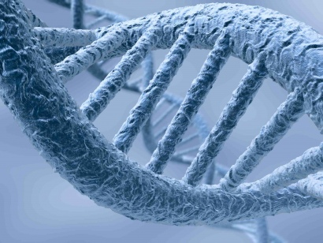

Forensic Genetics

An image of DNA
The use of the DNA print analysis in forensic science was introduced in the mid-1980s. In just twenty years, it has proven to be one of the most powerful forensic techniques in solving various types of serious crimes, in identifying unrecognizable human remains, and in paternity testing. This unit is about how the technique of DNA print analysis works, how it is being used to solve crime, and why it is considered to be one of the most valuable investigative tools available.
The following lessons will allow you to:
- examine DNA and two scientific techniques used to analyze it.
- discuss the difference between nuclear DNA and mitochondrial DNA and how each of these molecules is used in forensic investigations.
- focus upon how probability ratios are used to validate DNA matches and about the Canadian national DNA data bank.
- examine how an actual crime case was solved using forensic genetics; it allows students to solve a fictional crime case using DNA profile data.
By the end of Module 7, you should be able to
- outline the basic molecular structure and function of the DNA molecule and state the significance of VNTR patterns
- compare the features of nuclear DNA and mitochondrial DNA
- identify the steps involved in the creation of a DNA print and differentiate between RFLP and PCR DNA analysis techniques
- explain how DNA evidence is supported by population frequency values
- discuss the importance of the establishment of a comprehensive DNA data bank and propose the implications of having a national DNA data bank
- perform an experiment that involves the identification and comparison of various sample nuclear DNA fingerprints
- complete a case study that involves the evaluation and interpretation of DNA fingerprint population frequency values
“DNA typing caught the imagination of the forensic science community for it has long been the ambition of forensic scientists to link with certainty the origin of biological evidence.”
- Dr. Richard Saferstein (Forensic Science Author)